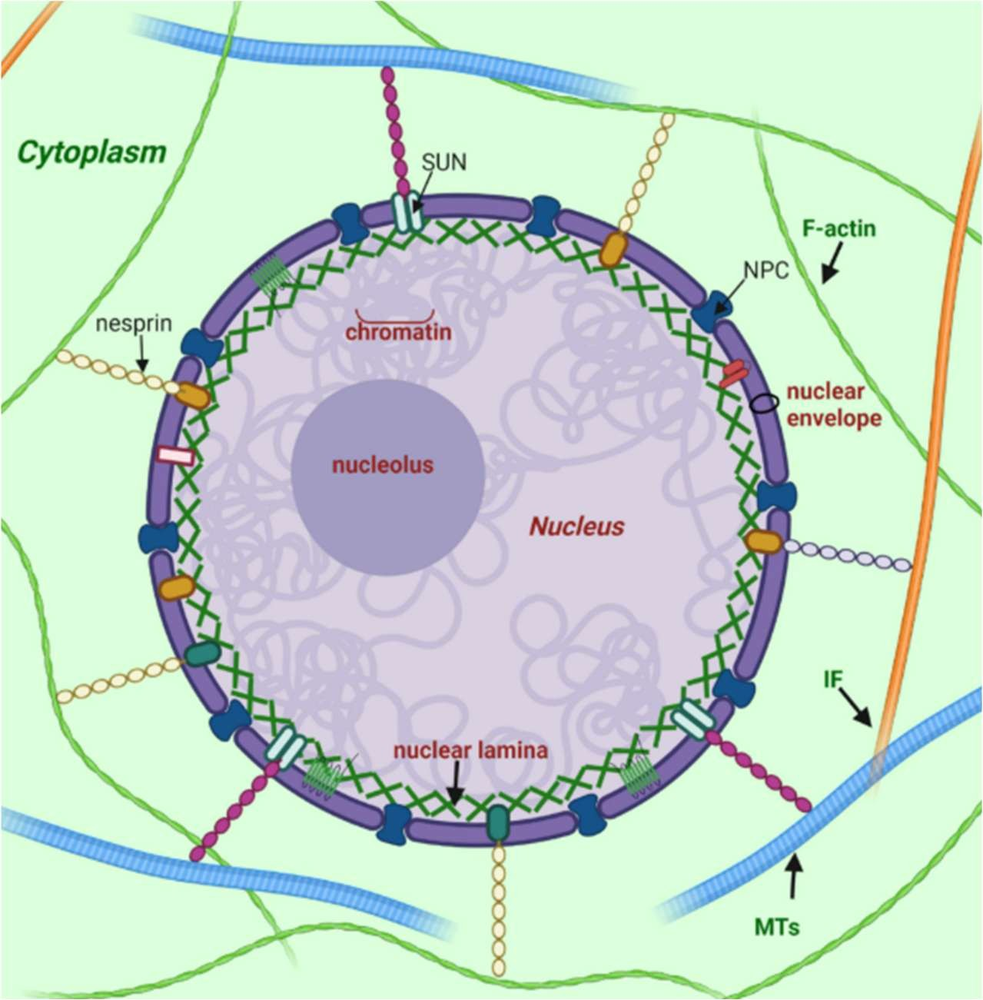

BIO103 · 第 3 章
核内过程与细胞骨架
Nuclear Processes & Cytoskeleton
虚线下划线为术语；悬停查看中文、英文与释义，完整词典见“术语”。
本章目录
本讲从细胞核的结构与核内过程出发，转到细胞骨架的三类纤维：肌动蛋白微丝、微管与中间丝，重点掌握它们的组装方式、极性、功能与相互连接。
本章要点
- 核被膜、核孔复合体、核仁与染色质共同构成细胞核；核孔对大分子运输具有选择性。
- 染色质分为常染色质与异染色质，受组蛋白修饰、DNA 甲基化与支架蛋白共同调控。
- 微丝由 G-actin 聚合为 F-actin，消耗 ATP，具有正端与负端。
- 微管由 α/β-tubulin 二聚体组成，每圈 13 个二聚体，装配需要 GTP 与 Mg²⁺。
- 中间丝不依赖核苷酸水解，无结构极性，主要提供机械强度。
- 三类纤维在直径、分布与功能上分工明确，并通过核纤层与连接蛋白相互联系。
3.1 细胞核与核仁
细胞核由双层膜的核被膜nuclear envelope包被，两层膜之间形成核周间隙（perinuclear space）。核被膜把核内 DNA 与细胞质分开，起保护作用。核内最主要的结构包括核质、核仁nucleolus与染色质。
核仁是核内的一个特化亚区，没有膜包围，由蛋白质与核酸组成；它是 rRNA 转录与核糖体亚基组装的场所，也是细胞中最大的细胞器之一（约 5–20 μm）。核仁还参与细胞分裂等过程的调控。
DNA 与组蛋白结合形成染色质chromatin。染色质在间期分为两种状态：
- 异染色质heterochromatin：紧密包装，转录不活跃。
- 常染色质euchromatin：松散，是 DNA 转录为 mRNA 的区域。
细胞分裂时，染色质进一步浓缩成染色体chromosome。染色质的开放与关闭不是随机的，而是由一组修饰与复合物共同决定：DNA 甲基化、组蛋白甲基化（如 H3K9me3）、组蛋白去乙酰化与辅阻遏复合物推动异染色质形成；H3K4me3、组蛋白乙酰化、连接组蛋白 H1 减少与辅激活复合物则推动常染色质形成。

L3–4 p.2–4
3.2 染色质的层级与染色体组织
染色质在电镜下呈现不同的包装层级：低离子强度下可见“串珠状”（beads on a string）结构；分离的单个核小体直径约 10 nm；中等离子强度下可观察到约 30 nm 的高级纤维。教学中常提到的 30 nm 螺线管（solenoid）模型是较早的体外模型，尚未在活体间期细胞中得到确认。
从 DNA 到有丝分裂染色体，大致经历：DNA 双螺旋 → 核小体 → 30 nm 纤维 → 浓缩的有丝分裂染色体（姐妹染色单体）。在间期，DNA 还会与转录因子等调控蛋白结合，以进行基因表达。
Clean vector academic diagram showing four levels of chromatin organization from left to right: DNA double helix, nucleosome beads on a string, 30 nm solenoid fibre, and condensed mitotic chromosome with two sister chromatids. Flat 2D, thin 1.5 px strokes, muted slate blue and warm grey palette, white background, English labels only, no cartoon, no gradient, no shadow, no 3D perspective.
真核染色体是线性排列的基因与染色质结构。染色体末端是端粒telomere，由重复 DNA 序列组成，保护末端不发生缠结或磨损；着丝粒（centromere）是染色体中部的特化区域，负责纺锤体连接，但着丝粒centromere不等于动粒kinetochore——后者是着丝粒上组装的蛋白质复合体。
基因是控制某一遗传性状的一段 DNA，基因之间由非编码的间隔序列隔开；一个基因包括编码序列、非编码调控序列与内含子，通常对应一个蛋白质或一个 RNA。人类基因组中，编码序列不到总 DNA 的 10%。
L3–4 p.4–6
3.3 核内过程与核质运输
细胞核是基因组 DNA 的储存库，同时承担多项核内过程：DNA 复制（S 期，先于有丝分裂与减数分裂）、DNA 修饰与损伤修复、转录（DNA → pre-mRNA）、RNA 加工（生成成熟 mRNA 或功能性 tRNA）、核糖体亚基组装（在核仁内），以及通过核转录因子对基因/蛋白表达的调控。microRNA 介导的调控主要发生在细胞质。
核内所需的组蛋白、DNA/RNA 聚合酶、基因调控蛋白与 RNA 加工蛋白都在细胞质中合成，再选择性地输入核内；mRNA、tRNA 与部分蛋白质则需要输出到细胞质。这一双向运输由核孔复合体nuclear pore complex控制。
核孔复合体是核被膜上的环状蛋白质复合物，形成一条由蛋白质衬里的通道。小分子可以自由扩散；较大的蛋白质需要信号肽才能通过。通道内的 FG-nups（苯丙氨酸-甘氨酸重复核孔蛋白）参与选择性运输。
L3–4 p.7–8
3.4 核仁与染色体异常
核仁参与核酸合成与核糖体亚基组装：细胞质中输入的蛋白质与 rRNA 在核仁内组装成核糖体亚基。放线菌素 D（Actinomycin D）是转录抑制剂类抗生素，阻断转录延伸，从而停止 mRNA、rRNA 与 tRNA 的合成，可用于实验性抑制转录。
染色体数目或结构异常会导致临床综合征。讲义列举的例子包括：18 三体（Edwards 综合征）、21 三体（Down 综合征）与 Turner 综合征（X 染色体缺失或异常）。这些例子用于说明核内过程与染色体组织异常和疾病的关系，具体临床特征不属本讲重点。
L3–4 p.9–10
3.5 细胞骨架总览与三类纤维
细胞骨架cytoskeleton是细胞内的三维蛋白质纤维网络，提供结构框架，引导细胞器运动与物质运输，参与细胞整体运动，并与相邻细胞发生直接接触。
按直径与组成，细胞骨架分为三类：
- 微丝microfilament（约 7 nm）：由 actin 组成，参与肌肉收缩等。
- 微管microtubule（约 25–30 nm）：参与细胞分裂等。
- 中间丝intermediate filament（约 8–12 nm）：参与核纤层形成等。
核纤层（nuclear lamina）是位于核被膜与染色质之间的刚性网状结构，由 A 型与 B 型 lamin 组成。核纤层与多种核被膜蛋白（NEPs）相互作用，并通过 SUN 蛋白与微管、通过 nesprin 与 F-actin 相连，从而把细胞核与细胞骨架联系起来。

L3–4 p.11–14
3.6 肌动蛋白微丝：聚合与回收
球状肌动蛋白单体（G-actinglobular actin）聚合成长丝状的F-actinfilamentous actin。F-actin 是由相同的球状亚基组成的扭曲双螺旋。聚合需要 ATP。
微丝具有极性：ATP-G-actin 优先结合到正端（plus end）；亚基掺入后 ATP 水解，促进解聚，ADP-G-actin 主要从负端（minus end）解离。游离 G-actin 上的 ADP 再交换为 ATP 后，单体重新具备聚合能力。这种“正端加、负端减”的循环称为踏车行为（treadmilling）。
Clean vector diagram of actin treadmilling: a double-helical actin filament with a plus end and a minus end, ATP-G-actin monomers adding at the plus end, ADP-G-actin dissociating at the minus end, and ATP hydrolysis shown as a small labeled step. Flat 2D, thin strokes, muted slate blue and warm grey, white background, English labels, no cartoon, no gradient, no shadow.
肌动蛋白结合蛋白（actin-binding proteins）调控微丝的动态：这类调节蛋白加快并精确控制 actin 的聚合与解聚，使细胞能够快速重塑 actin 网络。
肌动蛋白细胞骨架的功能覆盖多个尺度：维持细胞形态，驱动细胞爬行，参与胞质分裂与肌肉收缩，在细胞皮层形成支撑网络，并作为马达蛋白运输囊泡与细胞器的轨道。讲义还以哺乳动物精子顶体胞吐为例，说明顶体反应释放透明质酸酶（hyaluronidase）与顶体素（acrosin）等蛋白水解酶，帮助精子穿透卵子周围的透明带（zona pellucida）。讲义另有一行提到 actin 与“优化受光面积以进行光合作用”有关，但未展开具体机制，本课程资料未提供细节。
L3–4 p.15–18
3.7 肌球蛋白与细胞运动
肌球蛋白myosin是 actin 的马达蛋白，把 ATP 的化学能转化为机械力，沿 actin 丝运动。不同 myosin 分工不同：
- Myosin I：单头，连接 actin 与质膜，参与胞吞与膜运输。
- Myosin II：可形成双极丝，负责肌肉收缩与胞质分裂。
- Myosin V：双头、持续运动，负责囊泡与细胞器的长距离运输。
- Myosin III、VII：与感觉细胞（光感受器、内耳毛细胞）相关。
- Myosin VIII、XI：植物 myosin，参与胞间连丝、细胞分裂与胞质环流。
- Myosin IX：单头，调控 Rho GTPase 与细胞迁移。
Myosin I 可结合 actin 丝或膜，因此能相对 actin 丝移动囊泡；Myosin II 分子反平行组装成双极丝，使相邻 actin 丝相互滑动，从而在 actin 束中产生局部收缩。这一“滑动—收缩”机制是肌肉收缩与胞质分裂的共同基础。
L3–4 p.19–21
3.8 微管：结构与形成
微管是长的管状结构，每一圈螺旋含 13 个 tubulin 二聚体。微管有正端与负端，聚合发生在正端；装配需要 GTP 与 Mg²⁺，并与马达蛋白相连。
微管相关蛋白microtubule-associated proteins（MAPs）调控微管的聚合与解聚。马达蛋白 kinesin 与 dynein 负责运输货物：多数 kinesin 走向微管正端，dynein 走向负端。微管参与有丝分裂、减数分裂与细胞货物运输（如轴突运输）。
药物也能改变微管动态：抗癌药 paclitaxel 通过稳定微管中的 GDP-bound tubulin 影响微管稳定性（讲义表述为促进动态不稳定性，考试按讲义原意记忆）。
中心体centrosome是主要的微管组织中心（MTOC），含一对桶状中心粒（centrioles）。微管在中心粒周围的中心粒周围物质pericentriolar material（PCM）中成核，正端向外生长，负端锚定在 PCM 内。中心体位于细胞核附近，在 S 期与 DNA 复制同步复制，并在有丝分裂时形成纺锤体，参与染色体分离。
L3–4 p.22–24
3.9 纤毛、鞭毛与三类纤维比较
纤毛cilia与鞭毛flagella都是细胞表面的微管延伸结构。纤毛短、数量多、呈毛发状摆动，见于呼吸道上皮，参与液体清除、感觉与发育信号；鞭毛长、数量少、呈鞭状摆动，精子鞭毛主要负责细胞运动，也参与信号。
片状伪足（lamellipodia）前缘可伸出细长的丝状伪足（filopodia），参与迁移细胞的探索。微管的总体功能包括维持细胞形态、细胞内运输、细胞分裂与形成纤毛/鞭毛。
| 维度 | 微管 | 微丝 | 中间丝 |
|---|---|---|---|
| 亚基 | α/β-tubulin 二聚体 | 球状 actin 单体 | 纤维状角蛋白等多肽 |
| 直径 | 约 25 nm | 约 7 nm（最细） | 约 8–12 nm |
| 分布 | 从中心体向外辐射；纺锤体、纤毛、鞭毛 | 富集于细胞皮层/质膜下；支持形态、爬行、肌肉收缩、胞质分裂 | 贯穿胞质的绳索状网络；提供抗张强度，保护细胞免受拉伸 |
中间丝蛋白单体的结构分为三段：N 端头域（head domain）、α-螺旋杆状体（rod domain）与 C 端球状尾域（tail domain）。组装时，两个单体同向（平行）盘绕成二聚体；两个二聚体以反向（反平行）排列形成四聚体，因此中间丝缺乏结构极性——这是中间丝的关键特征。两个四聚体侧向并排形成一根原纤维（protofilament），8 条原纤维再侧向组装成约 10 nm 的成熟中间丝。中间丝装配不需要 ATP 或 GTP 水解，在承受机械张力的细胞中丰富，结构通常稳定，但可有调控性解聚（如有丝分裂时核纤层解聚）。组织特异性亚型包括上皮细胞的角蛋白、神经元的神经丝，以及所有动物细胞中的核纤层蛋白。
Clean vector comparison diagram of three cytoskeletal filaments drawn side by side at proportional diameters: microtubule as a hollow tube of 13 protofilaments (25 nm), actin microfilament as a twisted double helix (7 nm), intermediate filament as a rope-like antiparallel tetramer assembly (10 nm). Flat 2D, thin strokes, muted slate blue and warm grey, white background, English labels with diameters, no cartoon, no gradient, no shadow.
L3–4 p.25–30